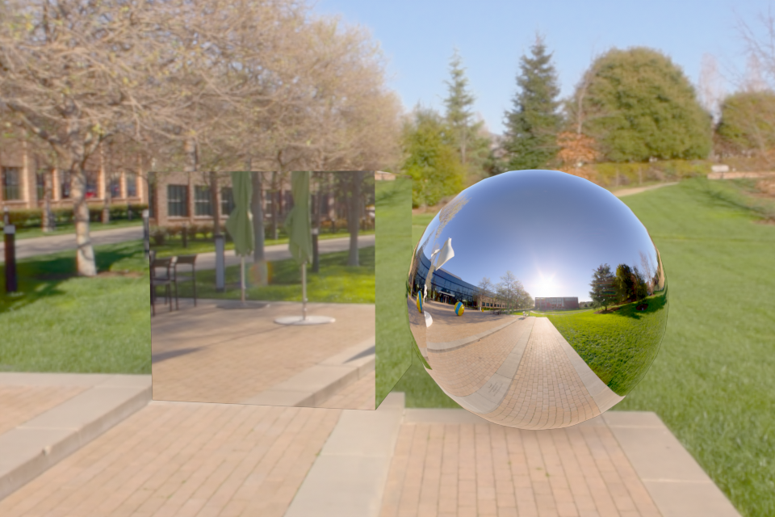
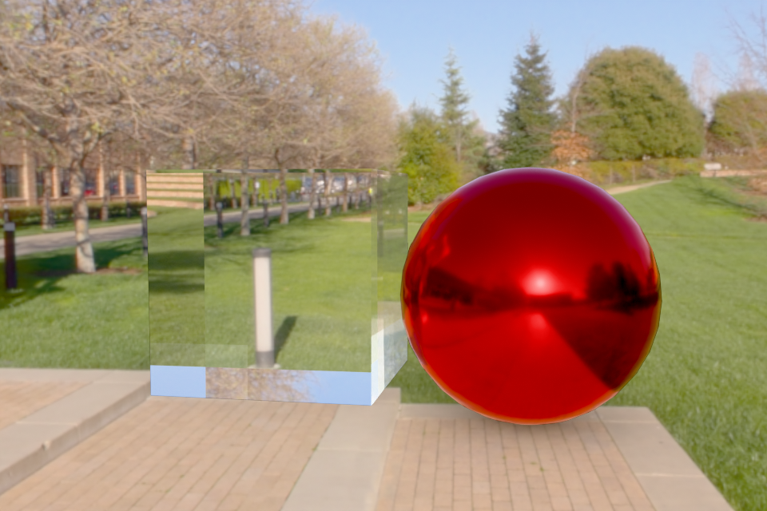
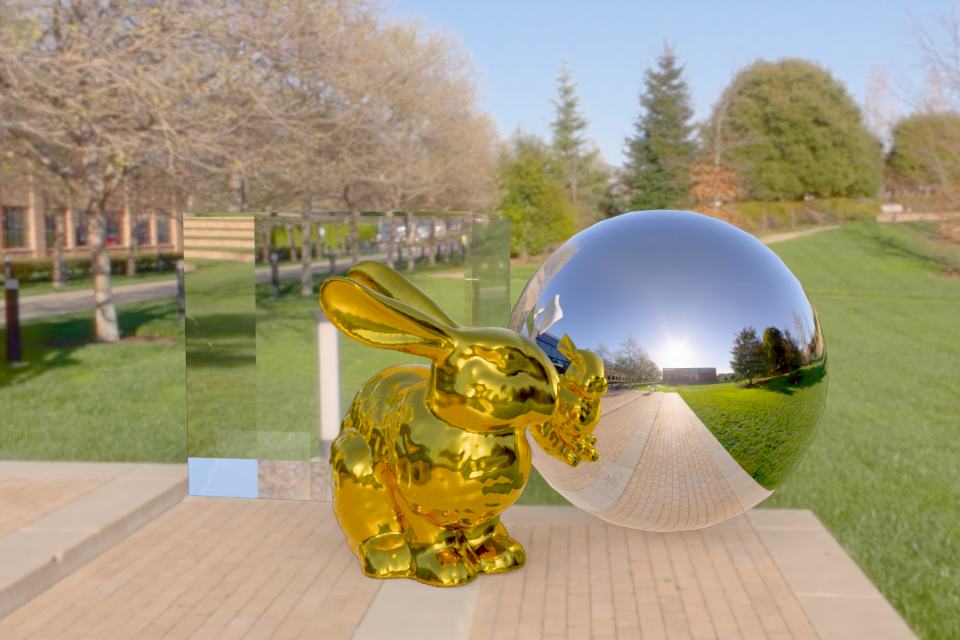

The three parts share one lit stage, so the only thing that changes between them is the materials — mirroring how we reused a single scene across Weeks 8–9 in our own renderer:
luxo_pxr_campus.exr (the Pixar campus plaza), fed into the Background node.
The HDR is both the only light source and the visible backdrop: its deep blue sky lights
the tops of the objects and its bright sun gives the contact shadows a clear direction. The panorama
only shipped as an RGBE-encoded .hdr.png, so convert_luxo_exr.py first
decodes it to a true linear .exr with rgb·2^(255·α−128) — the same RGBE
decode we used for environment maps in Week 9 — and box-filters the 8K source down to 4K in linear
radiance (keeping the lighting energy identical) so the environment texture fits comfortably in GPU
memory. A Mapping node rotates the panorama so the plaza and tree-line sit behind the
subjects.object.is_shadow_catcher = True). It is invisible
— it shows the environment behind it — but receives the contact shadows the synthetic objects
cast. This is the production version of the holdout trick we implemented by hand in Week 9.+ contrast and ~20 % saturation) so the greens, sky and chrome
read vividly rather than washed out.
Both objects use a fully metallic, zero-roughness Principled BSDF, which behaves as a perfect mirror. The sphere makes the mirror obvious: its curved surface samples the whole surrounding panorama at once, so we see plaza, trees and the blue sky wrapped across it. The cube's top face reflects the blue sky while its front faces reflect the bright plaza, so it reads brighter than the sphere — that is the physically correct appearance of a chrome cube whose flat faces each mirror one broad patch of the environment, not a diffuse white box. Soft contact shadows land on the holdout plane under both objects.

| Object | Principled BSDF settings | Appearance |
|---|---|---|
| Sphere | Base Color = red (0.85, 0.15, 0.12), Metallic = 1, Roughness = 0.15 | Coloured conductor: the base colour tints the reflection and the small roughness spreads the highlight into a glossy — not mirror-sharp — reflection. |
| Cube | Metallic = 0, Roughness = 0, Transmission Weight = 1, IOR = 1.5 | Clear dielectric glass. The cube shows the plaza and tree-line refracted (inverted) through the block — the give-away that it is solid glass rather than white. |
IOR 1.5 is the same index of refraction we used for glass in Week 8. Clear glass reads subtly against a bright environment: much of what the cube transmits and Fresnel-reflects is bright sky, so the refraction is clearest where darker content (the trees and buildings) lies behind it.

The triangle mesh is bunny.obj from Week 5, imported with bpy.ops.wm.obj_import.
It arrives Y-up and only ~0.15 units tall, so the script rotates it +90° about X to stand it, scales it
to ~1.7 m, and drops its feet exactly onto the ground plane.
Material settings used:
Rendering parameters and why:
Working in Cycles is faster to a good-looking result. It ships a production path tracer with importance-sampled HDRI lighting, multiple importance sampling, a denoiser, and the single Principled BSDF that expresses mirror, glossy metal, glass, subsurface, coat and sheen from one node — all of which we had to derive and implement by hand in WebGPU (Fresnel, the BSDF sampling, the accumulation buffer, the BSP traversal). Modelling, material authoring, lighting and rendering live in one tool, so composing a scene — placing the quad, importing a mesh, framing a camera — takes minutes, and the built-in shadow catcher gives us the holdout compositing we wrote manually in Week 9.
What we lose, and what WebGPU enables. Cycles is essentially a black box: we configure it but we do not control the integrator. In our WebGPU renderer we own every line of the rendering equation, so we can change the sampling strategy, implement a novel or non-physical BRDF, instrument the algorithm for teaching, choose our own acceleration structure, and run interactively in any browser with no installation. That transparency and customizability is exactly what a course renderer is for, and it is what Cycles deliberately hides.
What in Cycles would be hard to reproduce in WebGPU. The full Principled BSDF (physically based metallic/dielectric mixing, subsurface scattering, thin-film, coat) and its correct multiple importance sampling; the OpenImageDenoise/OptiX neural denoiser; robust heterogeneous volumetrics; spectral rendering; manifold next-event estimation for clean caustics through glass; adaptive sampling; and the surrounding production pipeline (hair, particles, an efficient GPU wavefront scheduler). Each of these is a substantial project on its own — together they represent years of engineering that a from-scratch WebGPU ray tracer cannot match.
| Required deliverable | Where |
|---|---|
| Mirror sphere and cube in a photographed environment with shadows on a holdout plane | Part 1 |
| Metallic sphere and glass cube in a photographed environment | Part 2 |
| Other object(s) in a photographed environment with a realistic material shader | Part 3 (gold Stanford bunny) |
| Explanation of material settings and rendering parameters | Part 3 text |
| Discussion: Cycles vs. WebGPU | Part 4 |